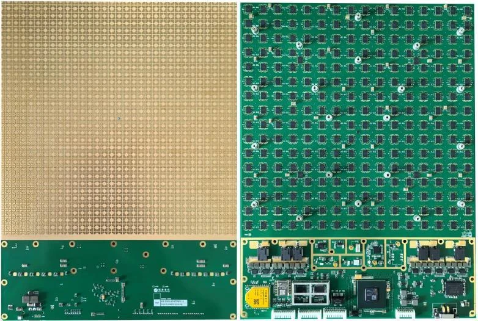
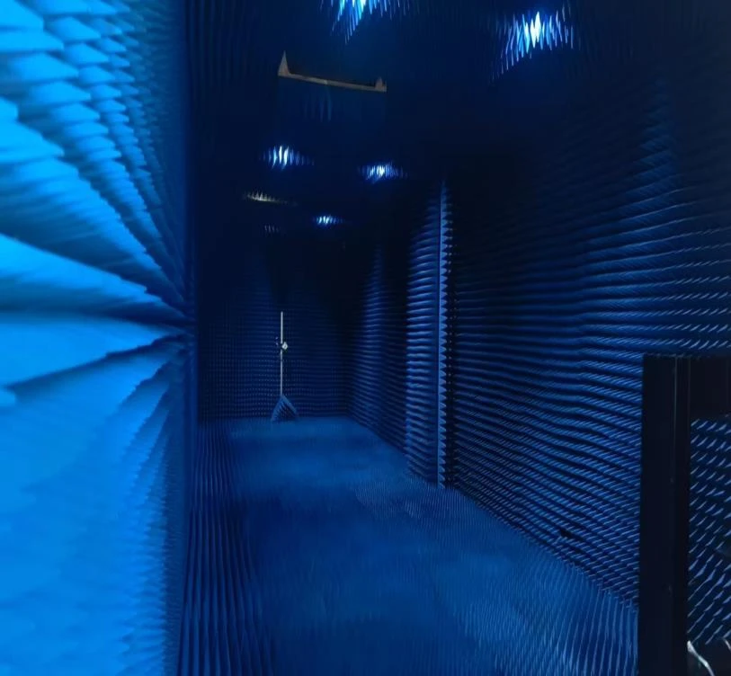
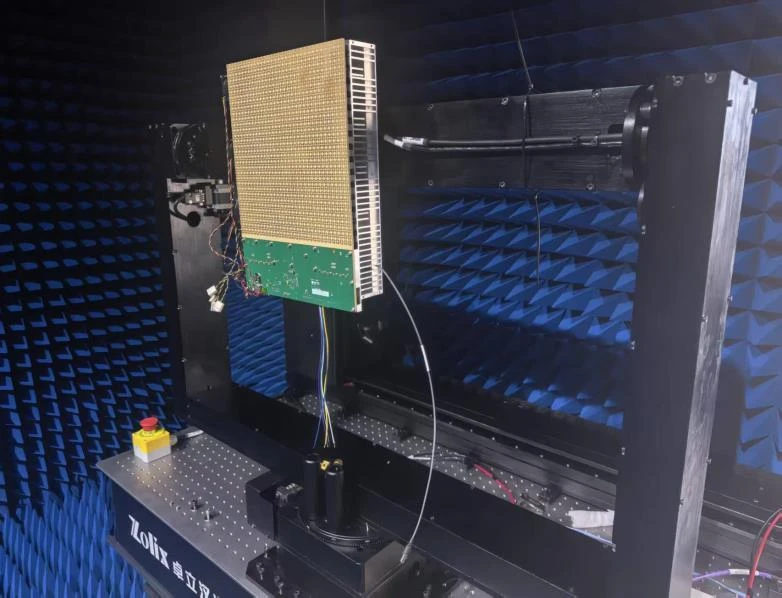

毫米波通信 · 卫星通信 · 相控阵天线
Beam Smart, Dominate Fast.
从地面专网，到空天互联。让相控阵技术走向更广阔的应用。
南京紫微泰克技术有限公司
紫微泰克专注相控阵天线与毫米波通信。核心团队来自紫金山实验室和东南大学毫米波全国重点实验室，以天线、电路与测试测量技术积累，推动科研成果走向工程产品。
了解产品方向，找到适合您的方案。

Ka频段发射组件及K频段相关接收产品。
Ku频段收发组件及双流接收组件。
面向专网覆盖、应急通信与无线传输。
24GHz四维感知，了解毫米波雷达产品。
了解产品方向，沟通您的应用需求。
提交频段、阵列与性能要求，与我们沟通。
工业数据传输、产线监控与港口专网。
车地通信、交通专网与车路协同。
大型活动及应急场景下的无线连接。
面向空天互联的终端阵面与硬件。
围绕有源天线、电路与测试测量开展研发，将自主知识产权的自动校准与测试用于相控阵产品，推动设计与验证协同。


报道介绍相控阵组件新品进展，以及毫米波专网与卫星通信的研发方向。
以毫米波通信与卫星通信为方向，